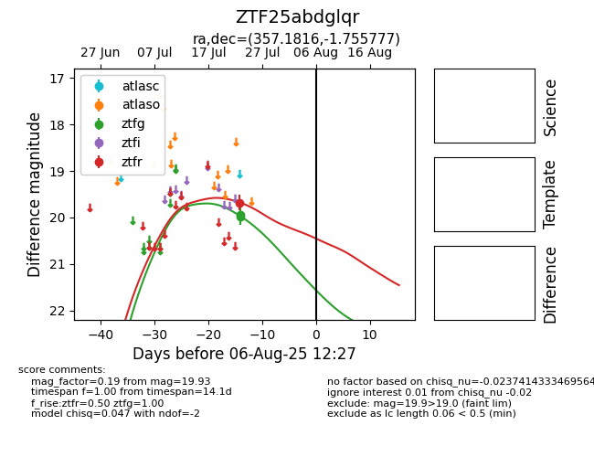

Target ZTF25abdglqr at 2025-08-06 17:07, see:
FINK: fink-portal.org/ZTF25abdglqr
Lasair: lasair-ztf.lsst.ac.uk/objects/ZTF25abdglqr
ALeRCE: alerce.online/object/ZTF25abdglqr
alt names
ZTF25abdglqr (ztf,fink)
coordinates:
equatorial (ra, dec) = (357.1816,-1.75578)
galactic (l, b) = (89.6545,-60.51049)
photometry
last ztfg=19.93, ztfr=19.68
2 ztfg, 1 ztfr detections
